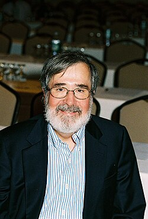

This article includes a list of general references but lacks sufficient corresponding inline citations. (February 2013) |
Edmund M. Clarke | |
|---|---|
 | |
| Born | Edmund Melson Clarke, Jr. July 27, 1945 Newport News, Virginia, U.S. |
| Died | December 22, 2020 (aged 75) |
| Education | University of Virginia (BA) Duke University (MA) Cornell University (PhD) |
| Known for | Model checking |
| Awards | A.M. Turing Award |
| Scientific career | |
| Fields | Computer science |
| Institutions | Carnegie Mellon University |
| Thesis | Completeness and Incompleteness Theorems for Hoare-Like Axiom Systems (1976) |
| Robert Lee Constable | |
Doctoral students | |
| Website | www |
{kind=link}
Edmund Melson Clarke, Jr. (July 27, 1945 – December 22, 2020) was an American computer scientist and academic noted for developing model checking, a method for formally verifying hardware and software designs. He was the FORE Systems Professor of Computer Science at Carnegie Mellon University. Clarke, along with E. Allen Emerson and Joseph Sifakis, received the 2007 ACM Turing Award.
Biography
Born in Newport News, Virginia, Clarke received a B.A. degree in mathematics from the University of Virginia, Charlottesville, in 1967, an M.A. degree in mathematics from Duke University, Durham NC, in 1968, and a Ph.D. degree in computer science from Cornell University, Ithaca, New York, in 1976. After receiving his Ph.D., he taught in the Department of Computer Science at Duke University, for two years. In 1978, he moved to Harvard University, Cambridge, Massachusetts, where he was an assistant professor of computer science in the Division of Applied Sciences. He left Harvard in 1982 to join the faculty in the Computer Science Department at Carnegie Mellon University, Pittsburgh, Pennsylvania. He was appointed full professor in 1989. In 1995, he became the first recipient of the FORE Systems Professorship, an endowed chair in the Carnegie Mellon School of Computer Science. He became a university professor in 2008 and became an emeritus professor in 2015.[2]
Clarke died from COVID-19 in December 2020, at age 75, during the COVID-19 pandemic in Pennsylvania.[3][4]
Work
Clarke's interests included software and hardware verification and automatic theorem proving. In his Ph.D. thesis he proved that certain programming language control structures did not have good Hoare-style proof systems. In 1981 he and his Ph.D. student E. Allen Emerson first proposed the use of model checking as a verification technique for finite-state concurrent systems. His research group pioneered the use of model checking for hardware verification. Symbolic model checking using binary decision diagrams was also developed by his group. This important technique was the subject of Kenneth L. McMillan's Ph.D. thesis, which received an ACM Doctoral Dissertation Award. In addition, his research group developed the first parallel resolution theorem prover (Parthenon) and a theorem prover based on a symbolic computation system (Analytica).[5] In 2009, he led the creation of the Computational Modeling and Analysis of Complex Systems (CMACS) center, funded by the National Science Foundation. This center has a team of researchers, spanning multiple universities, applying abstract interpretation and model checking to biological and embedded systems.
Professional recognition
Clarke was a fellow of the ACM and the IEEE. He received a Technical Excellence Award from the Semiconductor Research Corporation in 1995 and an Allen Newell Award for Excellence in Research from the Carnegie Mellon Computer Science Department in 1999. He was a co-winner along with Randal Bryant, Emerson, and McMillan of the ACM Paris Kanellakis Award in 1999 for the development of symbolic model checking. In 2004 he received the IEEE Computer Society Harry H. Goode Memorial Award for significant and pioneering contributions to formal verification of hardware and software systems, and for the profound impact these contributions have had on the electronics industry. He was elected to the National Academy of Engineering in 2005 for contributions to the formal verification of hardware and software correctness. He was elected to the American Academy of Arts and Sciences in 2011. He received the Herbrand Award in 2008 in "recognition of his role in the invention of model checking and his sustained leadership in the area for more than two decades." In 2012, he received an honorary doctorate from TU Wien for his outstanding contributions to the field of informatics. He received the 2014 Bower Award and Prize for Achievement in Science from the Franklin Institute for "his leading role in the conception and development of techniques for automatically verifying the correctness of a broad array of computer systems, including those found in transportation, communications, and medicine." He was a member of Sigma Xi and Phi Beta Kappa.
See also
References
- ^ Edmund Melson Clarke, Jr.
- ^ "Edmund M. Clarke". Cs.cmu.edu. Retrieved 24 December 2020.
- ^ James S. Clarke [@Jim_in_Oregon] (22 December 2020). "My father, Edmund M Clarke, passed away from Covid today. [...]" (Tweet) – via Twitter.
- ^ "Edmund Clarke Pioneered Methods For Detecting Software, Hardware Errors | Carnegie Mellon School of Computer Science". Cs.cmu.edu. Retrieved 24 December 2020.
- ^ Bauer, Andrej; Clarke, Edmund; Zhao, Xudong (1998). "Analytica – An Experiment in Combining Theorem Proving and Symbolic Computation". Journal of Automated Reasoning. 21 (3): 295–325. doi:10.1023/A:1006079212546.
External links
- Edmund M. Clarke at the Mathematics Genealogy Project
- Home page at Carnegie Mellon University
- Online biography from home page
- Turing Award announcement
- Model Checking book
- CMACS home page
- Garfinkel, Simson; Spafford, Eugene H. (March 2021). "In Memoriam: Edmund M. Clarke (1945–2020)". Communications of the ACM. 64 (3): 23–24. doi:10.1145/3447810.